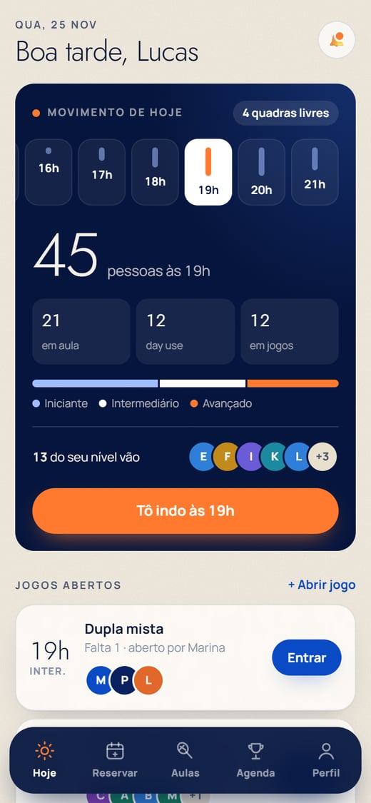
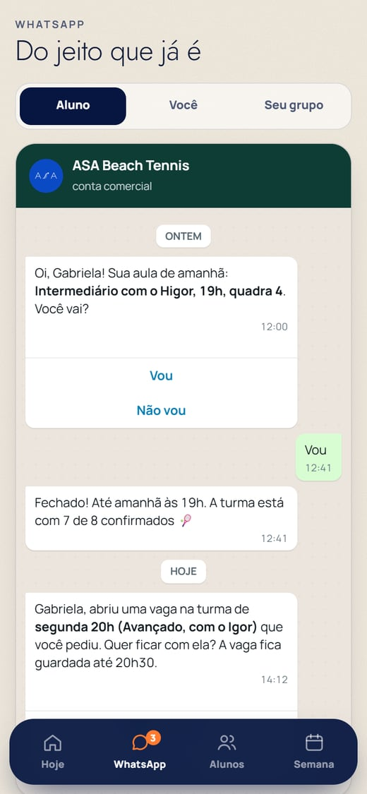
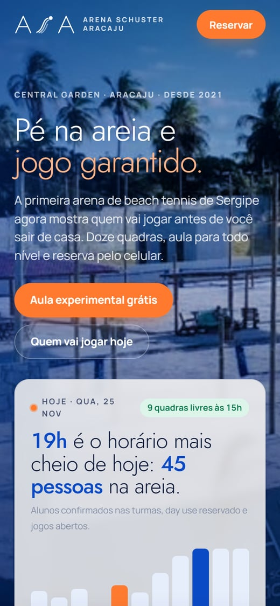
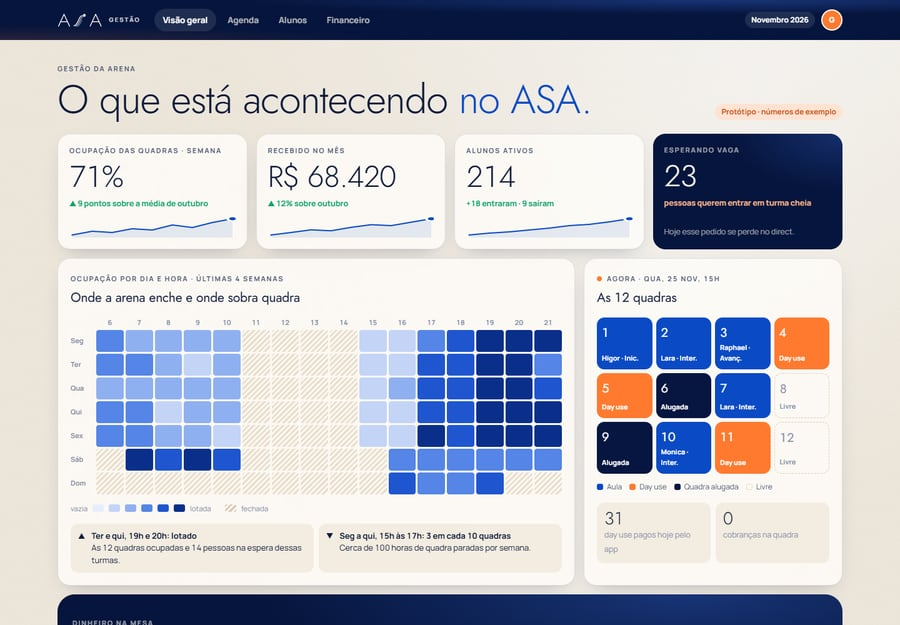

O ASA tem 12 quadras, o Verano, professores que jogam o circuito e recebeu o ITF BT100 em janeiro. Hoje quase tudo isso passa por direct, story e grupo de WhatsApp. Este protótipo mostra como fica quando o jogador vê quem vai antes de sair de casa, o professor para de contar vaga na mão e a gerência enxerga onde a arena enche e onde sobra quadra.
Olhamos os dois perfis da arena, os destaques, o link da bio e as fichas do Google em 25 de novembro. Nada aqui é crítica: é o que um cliente novo encontra hoje quando procura o ASA.
A reserva do day use é feita por mensagem. Quem pergunta à noite espera a resposta no dia seguinte, e a recepção não sabe quantos vêm.
Visitantes de day use foram cobrados no meio do jogo porque o pagamento não estava registrado. A resposta da arena confirma que cobra quando não vê o registro.
A ficha do endereço antigo continua ativa, com horário, outro telefone e sem dono. Um cliente novo pode ir parar no lugar errado.
O link da bio mostra o WhatsApp “ASA Farolândia”, “ASA Atalaia” e as fotos da Copa TV Atalaia 2023. Não existe site da arena.
Pagode de sábado, Play do sábado, Day Use Pais e Filhos, feijoada de sexta: a programação vive nos stories e some em 24 horas.
Quem vai, quem falta e quem quer entrar numa turma cheia fica espalhado em conversas. Não existe lista de espera, e a vaga de quem falta fica vazia.
Fontes: @asabeachtennis e @arenaasabeach (posts e destaques), linkbio.co/asabeachtennis e as duas fichas do ASA no Google Maps, consultados em 25/11/2026.
Tudo abre no celular e funciona ao toque. Os nomes dos professores, o endereço, os horários e o day use são do ASA. Turmas, alunos, vagas e números são de exemplo.
Quantas pessoas vão estar na areia em cada horário, de que nível, e onde tem jogo aberto.

A arena pergunta quem vai, conta as vagas e chama a lista de espera. O professor recebe a lista pronta.

Movimento de hoje, turmas com vaga, day use, quadras, jogos abertos, eventos, torneios e como chegar.

Ocupação por dia e hora, receita por tipo, lista de espera, conversão das experimentais e presença por professor.

Professor prefere WhatsApp porque é onde o aluno responde. Por isso o sistema conversa pelo WhatsApp também: o aluno não instala nada para confirmar aula, e o grupo da turma segue do jeito que é.
Não existe estudo de arena de beach tennis em Sergipe. Os números abaixo vêm de pesquisas com academias e com lembretes de compromisso, e de uma conta simples com as quadras do ASA. Cada um tem a fonte.
Em Natal, quem ia à academia 3 vezes ou menos por mês abandonou 1,5 a 1,9 vez mais do que quem ia 7 vezes ou mais. Metade dos alunos saiu em 3 meses.
Oliveira et al., Revista Brasileira de Ciências do Esporte, 2021 · 3.802 clientes · linkNuma academia com cerca de 2.500 sócios, um lembrete semanal aumentou as idas às aulas em grupo em 19% e as idas em geral em 13%.
Habla e Müller, Experimental Economics, 2021 · linkCom lembrete por mensagem, 78,6% das pessoas compareceram ao compromisso marcado. Sem lembrete, 67,8%.
Revisão Cochrane, 2013 · consultas de saúde, 7 estudos · link12 quadras abertas cerca de 74 horas por semana, pelo horário do Google. Vender uma hora a mais por quadra por semana são uns 52 horas a mais no mês, sem obra nenhuma.
Horário da ficha do ASA no Google Maps, 25/11/2026 · conta da Turma CheiaNas arenas de beach tennis da cidade que conferimos (Calu, Premier, D87, Ravenna), aula e quadra se marcam pelo WhatsApp. A primeira a mostrar quem vai jogar e a vender o day use pelo celular sai na frente. A Arena Calu tem hoje 9.765 seguidores no Instagram; o ASA, 5.742.
Instagram e Linktree de cada arena, consultados em 25/11/2026.A arena continua funcionando como hoje enquanto o sistema entra por partes. Cada etapa já resolve alguma coisa sozinha.
Na primeira semana o site entra no link da bio, com horário, endereço, programação e day use pago no Pix. A ficha antiga do Google é corrigida.
Um professor cadastra uma turma. Os alunos começam a receber o “Vou / Não vou” do número da arena e a fila de espera passa a valer.
Com o piloto rodando, os outros professores entram. Quadras e jogos abertos vão para o app, e o movimento de cada horário aparece para todo mundo.
A gerência passa a ver ocupação, receita, lista de espera e alunos sumindo, e decide horário de turma nova e promoção com número na mão.